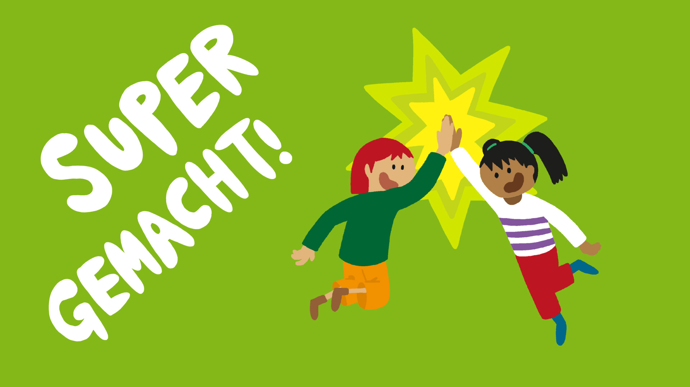

<!DOCTYPE html>
<html lang="de">
<head>
  <meta charset="utf-8">
  <title>SPEAK W12 A3</title>

  <!--
    ============================================================
    DEPENDENCIES
    ============================================================
    This experiment is implemented with jsPsych v6.3.1 and a single
    core plugin (html-button-response) to render fully custom HTML
    per trial. All logic (audio control, click gating, feedback)
    is handled manually in on_load callbacks.

    PapaParse is used to load CSV configuration files client-side.
    The whole experiment is therefore configured via:
      - stimuli_R/K2_W12_A3_general.csv  (block-level metadata)
      - stimuli_R/K2_W12_A3_task.csv     (trial-level stimuli)
  -->

  <!-- jsPsych 6.3.1 -->
  <script src="https://unpkg.com/jspsych@6.3.1/jspsych.js"></script>
  <script src="https://unpkg.com/jspsych@6.3.1/plugins/jspsych-html-button-response.js"></script>
  <link href="https://unpkg.com/jspsych@6.3.1/css/jspsych.css" rel="stylesheet">

  <!-- PapaParse -->
  <script src="https://cdn.jsdelivr.net/npm/papaparse@5.4.1/papaparse.min.js"></script>

  <!--
    ============================================================
    TYPOGRAPHY
    ============================================================
    ABeeZee is used consistently across the jsPsych display tree.
    This keeps visuals aligned with the SPEAK UI style.
  -->
  <link rel="preconnect" href="https://fonts.googleapis.com">
  <link rel="preconnect" href="https://fonts.gstatic.com" crossorigin>
  <link href="https://fonts.googleapis.com/css2?family=ABeeZee&display=swap" rel="stylesheet">

  <style>
    /*
      ============================================================
      GLOBAL PAGE / JSPSYCH BASE
      ============================================================
      We style the document body and enforce a global font for the
      jsPsych container and all child nodes. This avoids having to
      re-set fonts on each trial stimulus.
    */
    body { background:#fcfcfc; margin:0; }

    .jspsych-display-element,
    .jspsych-display-element * { font-family: "ABeeZee", sans-serif; }

    .center { text-align:center; }

    /*
      ============================================================
      BUTTONS (SPEAKER + NEXT)
      ============================================================
      These are icon-only buttons (no default browser border/background).
      Padding is removed so the button's clickable area matches icon size.
    */
    .speaker-btn,
    .next-btn {
      background:none;
      border:none;
      cursor:pointer;
      padding:0;
    }

    /* Speaker and Next use the same height so they feel aligned/consistent. */
    .speaker-btn img { height:70px; }
    .next-btn img { height:70px; }

    /* Utility: hide things until the trial logic reveals them. */
    .hide { display:none; }

    /*
      ============================================================
      MAIN IMAGE (TARGET STIMULUS)
      ============================================================
      This is the item image shown above the response bar.
      The cursor is a pointer because the image also triggers audio playback.
    */
    .main-img {
      width:420px;
      max-width:80vw;
      border-radius:22px;
      box-shadow:0 0 0 6px rgba(200,200,200,0.5);
      cursor:pointer;
    }

    /*
      ============================================================
      PLAYBACK HIGHLIGHT
      ============================================================
      Applied to the main image while the item audio is playing,
      to provide an immediate, child-friendly visual cue.
    */
    .highlight-orange {
      box-shadow:0 0 0 10px rgba(255,140,0,0.9);
      border-radius:24px;
    }

    /* Intro text styling */
    .start-title { font-size:2em; margin-bottom:10px; }
    .start-subtitle { font-size:1.1em; margin-bottom:20px; color:#555; }

    /*
      ============================================================
      STARS OVERLAY
      ============================================================
      Shown on correct responses. Positioned in the middle of the response bar area.
      pointer-events:none ensures it cannot block clicks.
    */
    .stars-img {
      position:absolute;
      left:50%;
      top:50%;
      transform:translate(-50%,-50%);
      width:200px;
      pointer-events:none;
      z-index:5;
    }

    /*
      ============================================================
      RESPONSE BAR LAYOUT
      ============================================================
      The response bar is a background image (neutral/correct/incorrect)
      with two response option images (same/different) positioned on top.
    */
    .bar-wrap {
      position:relative;
      width:900px;
      max-width:95vw;
      margin:26px auto 0 auto;
    }

    .bar-img {
      width:100%;
      height:auto;
      display:block;
      border-radius:22px;
    }

    /*
      Response options embedded into the bar. These are absolutely positioned
      so they visually sit “inside” the bar UI.
    */
    .bar-choice {
      position:absolute;
      top:50%;
      transform:translateY(-50%);
      width:160px;
      max-width:20vw;
      border-radius:18px;
      cursor:pointer;
      border:6px solid transparent;
      z-index:3;
      transition: border 0.2s, box-shadow 0.2s, opacity 0.2s;
    }

    .bar-choice.left { left:55px; }
    .bar-choice.right { right:55px; }

    /*
      Disabled state for response options:
      - pointer-events:none prevents selection
      - opacity reduces salience and indicates “not ready”
    */
    .bar-choice.disabled { pointer-events:none; opacity:0.6; }

  </style>
</head>

<body>
  <!--
    jsPsych renders into this element. Keeping it explicit avoids any confusion
    when embedding into larger pages.
  -->
  <div id="jspsych-target"></div>

<script>
/*
  ============================================================
  CSV LOADING (PapaParse)
  ============================================================
  loadCSV(url) downloads and parses a CSV file and returns an array
  of row objects (header => value). Empty rows are filtered out.

  This pattern keeps experiment configuration in external CSV files,
  making it easy to adjust stimuli without touching code.
*/
function loadCSV(url){
  return new Promise((resolve, reject) => {
    Papa.parse(url, {
      header: true,
      download: true,
      complete: r => {
        const rows = (r.data || []).filter(row =>
          Object.values(row).some(v => v && v.trim && v.trim() !== "")
        );
        resolve(rows);
      },
      error: err => reject(err)
    });
  });
}

/*
  ============================================================
  AUDIO HELPERS
  ============================================================

  playAudioSafe(audioEl)
    - Resets audio to the beginning (currentTime = 0)
    - Calls play()
    - Returns a Promise<boolean> that resolves to:
        true  if playback started successfully
        false if the browser blocked playback (autoplay restrictions)
*/
function playAudioSafe(audioEl){
  if(!audioEl) return Promise.resolve(false);
  try { audioEl.currentTime = 0; } catch(e){}
  const p = audioEl.play();
  if(p && typeof p.catch === "function"){
    return p.then(()=>true).catch(()=>false);
  }
  return Promise.resolve(true);
}

/*
  Many browsers require a user gesture before any audio can be played.
  We implement a one-time "unlock" routine:
    - After the first click/keydown, we play a tiny silent audio snippet.
    - This lifts the autoplay restriction for subsequent play() calls.
*/
let __audioUnlocked = false;

function unlockAudioOnce(){
  if(__audioUnlocked) return;
  __audioUnlocked = true;

  try{
    const a = new Audio();
    a.src = "data:audio/mp3;base64,//uQZAAAAAAAAAAAAAAAAAAAAAA==";
    a.play().catch(()=>{});
  }catch(e){}
}

/*
  ============================================================
  MAIN EXPERIMENT
  ============================================================
  Uses an async IIFE to:
    - load CSV files
    - build a jsPsych timeline
    - run jsPsych.init(...)
*/
(async function main(){
  let general, trials;

  /*
    Load CSV configuration. If it fails, show a jsPsych error trial.
    NOTE: Paths are relative to the served HTML file.
  */
  try {
    general = await loadCSV("stimuli_R/K2_W12_A3_general.csv");
    trials  = await loadCSV("stimuli_R/K2_W12_A3_task.csv");
  } catch(e){
    jsPsych.init({
      timeline:[{
        type: "html-button-response",
        stimulus: "<h2>CSV konnte nicht geladen werden</h2><p>" + String(e) + "</p>",
        choices: ["OK"]
      }],
      display_element: "jspsych-target"
    });
    return;
  }

  /*
    general.csv is expected to contain exactly one row.
    That row acts as block-level metadata: week, explanation_image/audio, goodbye_audio, etc.
  */
  const meta = general[0] || {};

  /*
    The jsPsych timeline collects:
      1) Intro screen (instructions + example)
      2) A sequence of randomized A3 trials
      3) Goodbye screen
  */
  const timeline = [];

  /* ============================================================
     INTRO / INSTRUCTIONS TRIAL
     ============================================================
     This screen shows:
       - title + subtitle
       - example image (sized larger via inline style)
       - speaker button
       - next arrow (hidden until the explanation audio finishes)

     Important:
       - We do NOT autoplay here; instead we unlock audio on the first
         user gesture and then let the user click speaker/image to start.
  */
  timeline.push({
    type: "html-button-response",
    stimulus: `
      <div class="center" style="margin-top:32px;">
        <div class="start-title">${meta["title"] || ("SPEAK Woche " + (meta["week"] || "12"))}</div>
        <div class="start-subtitle">
          Hör dir die Erklärung an. Klicke auf den Lautsprecher und danach auf den Pfeil.
        </div>

        

        <div style="margin-bottom:14px;">
          <button class="speaker-btn" id="play-explain" aria-label="Audio abspielen">
            
          </button>
        </div>

        <div style="margin-top:10px;">
          <button class="next-btn hide" id="start-next">
            
          </button>
        </div>

        <audio id="explain-audio" src="stimuli_R/${meta["explanation_audio"]}"></audio>
      </div>
    `,
    choices: [],
    on_load: function(){
      /* DOM references for intro trial */
      const audio = document.getElementById("explain-audio");
      const img   = document.getElementById("explain-img");
      const play  = document.getElementById("play-explain");
      const next  = document.getElementById("start-next");
      const speakerIcon = document.getElementById("speaker-explain-img");

      /* Prevent overlapping play() calls */
      let isPlaying = false;

      /*
        UI helper: during playback we highlight the image orange and switch
        the speaker icon to the "playing" version (blue).
      */
      function setPlayingUI(flag){
        if(flag){
          img.classList.add("highlight-orange");
          speakerIcon.src = "stimuli_R/speaker_playing.png";
        } else {
          img.classList.remove("highlight-orange");
          speakerIcon.src = "stimuli_R/speaker.png";
        }
      }

      /*
        Playback routine:
          - guard against re-entry while already playing
          - set UI to "playing"
          - play audio safely (catching autoplay errors)
      */
      async function playExplain(){
        if(isPlaying) return;
        isPlaying = true;
        setPlayingUI(true);
        await playAudioSafe(audio);
      }

      /*
        Audio unlock:
        Attach capture listeners to ensure the first click/keydown is caught
        even if the user clicks a nested element first.
        After first gesture, we remove listeners.
      */
      function firstUserGesture(){
        unlockAudioOnce();
        document.removeEventListener("click", firstUserGesture, true);
        document.removeEventListener("keydown", firstUserGesture, true);
      }
      document.addEventListener("click", firstUserGesture, true);
      document.addEventListener("keydown", firstUserGesture, true);

      /*
        Speaker and image both trigger playback. Each also ensures audio is
        unlocked before attempting playback.
      */
      play.onclick = function(){
        unlockAudioOnce();
        playExplain();
      };
      img.onclick = function(){
        unlockAudioOnce();
        playExplain();
      };

      /*
        When explanation audio ends:
          - clear UI state
          - reveal the "next" arrow to continue
      */
      audio.onended = function(){
        isPlaying = false;
        setPlayingUI(false);
        next.classList.remove("hide");
      };

      /* Move on to the first real trial */
      next.onclick = () => jsPsych.finishTrial();
    }
    
  });

  /*
    ============================================================
    TRIAL RANDOMIZATION
    ============================================================
    Shuffle the trial list from the task CSV.
    This mirrors the OpenSesame "order random" behavior.
  */
  trials = jsPsych.randomization.shuffle(trials);

  /*
    ============================================================
    TRIAL FACTORY (A3)
    ============================================================
    Each CSV row becomes one jsPsych trial.

    Expected task CSV columns:
      image
      question                  (audio filename)
      image_answer1             (same.png)
      image_answer2             (different.png)
      correct_answer            (same.png or different.png)
      fb_correct                (stars_correct.mp3)
      fb_incorrect_second_try   (explanation audio for wrong)

    Behavior summary:
      - The audio can be replayed by clicking speaker or main image.
      - Response options are disabled until the participant has played the audio at least once.
      - After answer selection:
          correct -> show stars + correct bar + twinkle audio
          wrong   -> show incorrect bar + play explanation audio
      - Next arrow appears after feedback audio is done.
  */
  trials.forEach(t => {
    /* Normalize / sanitize CSV fields (trim strings) */
    const mainImgFile   = String(t.image || "").trim();
    const qAudioFile    = String(t.question || "").trim();
    const ans1File      = String(t.image_answer1 || "").trim();   // same.png
    const ans2File      = String(t.image_answer2 || "").trim();   // different.png
    const correctFile   = String(t.correct_answer || "").trim();
    const fbCorrectFile = String(t.fb_correct || "").trim();      // stars_correct.mp3
    const fbWrongFile   = String(t.fb_incorrect_second_try || "").trim();

    /*
      Determine which answer index is correct by matching filenames.
      Index 0 corresponds to image_answer1, index 1 to image_answer2.
    */
    const correctIndex = (correctFile === ans1File) ? 0 : 1;

    timeline.push({
      type: "html-button-response",
      stimulus: `
        <div class="center" style="margin-top:26px; position:relative;">

          <!-- Speaker button placed above the main image (no overlap). -->
          <div style="margin-bottom:10px;">
            <button class="speaker-btn" id="play-question" aria-label="Audio abspielen">
              
            </button>
          </div>

          <!-- Main stimulus image. Clicking it replays the audio. -->
          <div style="position:relative; display:inline-block;">
            
          </div>

          <!-- Response bar + two embedded answer images (same/different). -->
          <div class="bar-wrap" id="bar-wrap">
            

            

            

            <!-- Stars are an overlay shown only on correct responses. -->
            
          </div>

          <!-- Next arrow hidden until feedback is complete. -->
          <div style="margin-top:18px;">
            <button class="next-btn hide" id="next-trial">
              
            </button>
          </div>

          <!-- Question audio for this trial -->
          <audio id="question-audio" src="stimuli_R/${qAudioFile}"></audio>
        </div>
      `,
      choices: [],

      /*
        Trial metadata saved into jsPsych's data store.
        This makes downstream analysis easier (e.g., filter by week/task_type).
      */
      data: {
        image: mainImgFile,
        question_audio: qAudioFile,
        answer1: ans1File,
        answer2: ans2File,
        correct_answer: correctFile,
        block_type: meta["block_type"] || "W12_A3",
        week: meta["week"] || "12",
        task_type: meta["task type"] || meta["task_type"] || "A3"
      },

      on_load: function(){
        /* DOM references for this trial instance */
        const qAudio = document.getElementById("question-audio");
        const playBtn = document.getElementById("play-question");
        const speakerIcon = document.getElementById("speaker-q-img");
        const mainImg = document.getElementById("main-img");

        const answers = [document.getElementById("answer-0"), document.getElementById("answer-1")];
        const barImg = document.getElementById("bar-img");
        const stars = document.getElementById("stars-img");
        const nextBtn = document.getElementById("next-trial");

        /*
          Trial state flags:
            hasResponded  -> once an answer is chosen, prevent further changes
            chosenIndex   -> selected answer index (0/1)
            isPlaying     -> audio currently playing (avoid overlapping)
            heardOnce     -> gating: must have started audio at least once
        */
        let hasResponded = false;
        let chosenIndex = null;
        let isPlaying = false;
        let heardOnce = false;

        /*
          Enable/disable response options (same/different).
          This is used to gate responses until audio was heard and also to
          freeze the UI during playback/feedback.
        */
        function setAnswersEnabled(flag){
          answers.forEach(el => {
            if(!el) return;
            el.classList.toggle("disabled", !flag);
            el.style.pointerEvents = flag ? "auto" : "none";
          });
        }

        /*
          UI helper: highlight the main image orange and swap speaker icon
          to "playing" while the question audio is playing.
        */
        function setPlayingUI(flag){
          if(flag){
            mainImg.classList.add("highlight-orange");
            speakerIcon.src = "stimuli_R/speaker_playing.png";
          } else {
            mainImg.classList.remove("highlight-orange");
            speakerIcon.src = "stimuli_R/speaker.png";
          }
        }

        /*
          playQuestion():
            - records that audio has been heard at least once
            - disables responses while playing
            - prevents overlapping playback
            - starts playback from the beginning (via playAudioSafe)
        */
        async function playQuestion(){
          if(hasResponded) return;
          if(isPlaying) return;

          heardOnce = true;
          isPlaying = true;

          setAnswersEnabled(false);
          setPlayingUI(true);

          await playAudioSafe(qAudio);
        }

        /*
          When question audio ends:
            - clear playback UI
            - if participant still hasn't answered and has heard the audio,
              enable response options.
        */
        qAudio.onended = function(){
          isPlaying = false;
          setPlayingUI(false);

          if(!hasResponded && heardOnce){
            setAnswersEnabled(true);
          }
        };

        /*
          Both speaker and main image trigger audio replay.
          We also unlock audio here to avoid NotAllowedError issues.
        */
        playBtn.onclick = function(){
          unlockAudioOnce();
          playQuestion();
        };
        mainImg.onclick = function(){
          unlockAudioOnce();
          playQuestion();
        };

        /*
          Initial state for each trial:
            - response options disabled until audio was played at least once
        */
        setAnswersEnabled(false);

        /*
          Helper to play feedback audio and then reveal the next arrow.
          If audio playback fails, we still reveal next to prevent getting stuck.
        */
        function finishFeedbackThenShowNext(feedbackAudioEl){
          if(feedbackAudioEl){
            feedbackAudioEl.onended = function(){
              nextBtn.classList.remove("hide");
            };
            feedbackAudioEl.play().catch(()=>{ nextBtn.classList.remove("hide"); });
          } else {
            nextBtn.classList.remove("hide");
          }
        }

        /*
          Response handling for the two answer options.
          Conditions:
            - cannot answer while audio is playing
            - cannot answer before hearing audio once
            - only first answer counts
        */
        answers.forEach((imgEl) => {
          imgEl.onclick = function(){
            if(hasResponded) return;
            if(isPlaying) return;
            if(!heardOnce) return;

            hasResponded = true;
            setAnswersEnabled(false);

            chosenIndex = parseInt(imgEl.dataset.index, 10);
            const isCorrect = (chosenIndex === correctIndex);

            if(isCorrect){
              /* Correct feedback: change bar, show stars, play twinkle audio */
              barImg.src = "stimuli_R/response_bar_correct.png";
              stars.classList.remove("hide");

              const fb = fbCorrectFile ? new Audio("stimuli_R/" + fbCorrectFile) : null;
              finishFeedbackThenShowNext(fb);
            } else {
              /* Incorrect feedback: change bar, play explanation audio */
              barImg.src = "stimuli_R/response_bar_incorrect.png";

              const fb = fbWrongFile ? new Audio("stimuli_R/" + fbWrongFile) : null;
              finishFeedbackThenShowNext(fb);
            }
          };
        });

        /*
          Next arrow ends the trial and writes the response into jsPsych data.
          We store:
            - chosen_index
            - chosen_image filename
            - correct_index
            - correct (1/0)
        */
        nextBtn.onclick = function(){
          jsPsych.finishTrial({
            chosen_index: chosenIndex,
            chosen_image: chosenIndex === 0 ? ans1File : ans2File,
            correct_index: correctIndex,
            correct: (chosenIndex === correctIndex) ? 1 : 0
          });
        };
      }
    });
  });

  /* ============================================================
     GOODBYE SCREEN
     ============================================================
     Plays a goodbye audio and offers a final next arrow.
     (Audio playback may still be restricted until user gesture,
      so we catch() to avoid console noise.)
  */
  timeline.push({
    type: "html-button-response",
    stimulus: `
      <div class="center" style="margin-top:40px;">
        
        <div style="margin-top:20px;">
          <button class="next-btn" id="goodbye-next">
            
          </button>
        </div>
        <audio id="goodbye-audio" src="stimuli_R/${meta["goodbye_audio"]}"></audio>
      </div>
    `,
    choices: [],
    on_load: function(){
      const audio = document.getElementById("goodbye-audio");
      const next  = document.getElementById("goodbye-next");
      audio.play().catch(()=>{});
      next.onclick = () => jsPsych.finishTrial();
    }
  });

  /*
    ============================================================
    START JSPSYCH
    ============================================================
    The entire timeline is executed in order:
      Intro -> randomized trials -> goodbye
  */
  jsPsych.init({
    timeline,
    display_element: "jspsych-target"
  });

})();
</script>
</body>
</html>
